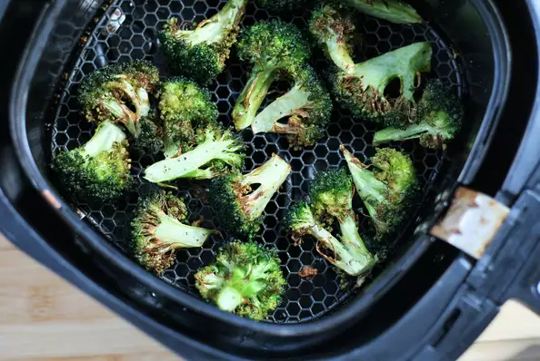

Airfryer Broccoli

Description
Have you tried making air fryer broccoli? All you need is olive oil, salt, and pepper, and the broccoli turns out wonderfully crispy and tasty.
Ingredients
- 1 head fresh broccoli, cut into florets
- 1/4 cup olive oil
- salt and ground black pepper to taste
Steps
- Combine broccoli, olive oil, salt, and pepper in a resealable bag. Set aside to allow the broccoli to soak up the oil, about 30 minutes.
- Preheat the air fryer to 375 degrees F (190 degrees C).
- Place broccoli in the air fryer basket and cook until desired crispiness, 10 to 15 minutes, shaking air fryer basket halfway through cook.